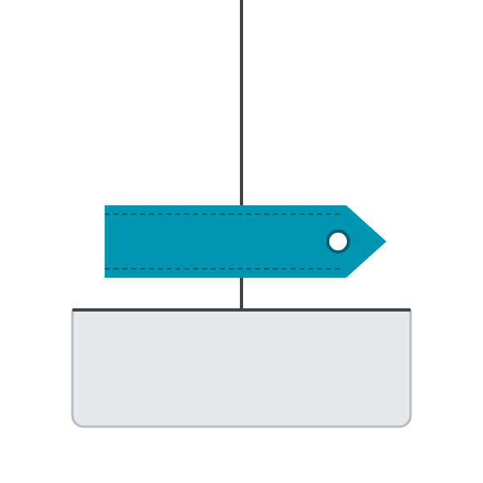
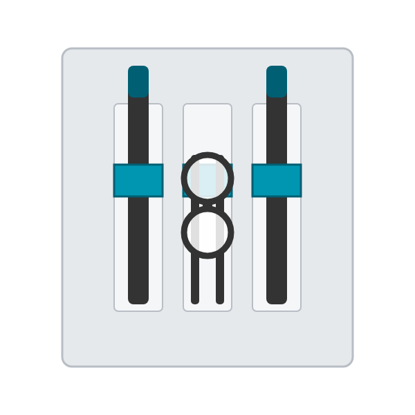

Patrons gratuits
Poches et autres détails de vêtements, sur mesure : entrez vos dimensions, téléchargez un PDF A4 à l'échelle 1:1 avec marges de couture.
Choisissez une famille

Poches plaquées
Créer un patron

Autres poches
En cours de développement

Épaulettes
En cours de développement

Pattes de manches
En cours de développement

« Cartouchières »
Porte-stylos et lunettes · En cours de développement
Réalisations


Comment ça marche
- Choisissez la forme de la poche
- Entrez vos mesures et la marge de couture
- Téléchargez le PDF et imprimez-le à 100 % (guide)
Un mot de l'auteur
Je suis retraité et je me suis mis à la couture sur le tard. Ce site n'a bien sûr pas la prétention d'être exhaustif sur le patronage des poches.
C'est en utilisant les patrons paramétriques gratuits de FreeSewing, puis en patronant avec Seamly2D, un logiciel gratuit de conception de patrons paramétriques, et en réalisant des sahariennes dans des draps métis de ma grand-mère que je me suis amusé à étudier les types de poches plaquées présentés ici.
J'ai l'intention d'ajouter à ce site des patrons de détails vestimentaires utiles pour les vestes, les manteaux…
Si vous avez des demandes particulières dans le champ de ce site, n'hésitez pas à me les faire connaître par le formulaire « Votre avis » (anonyme) ou par courriel : Me contacter